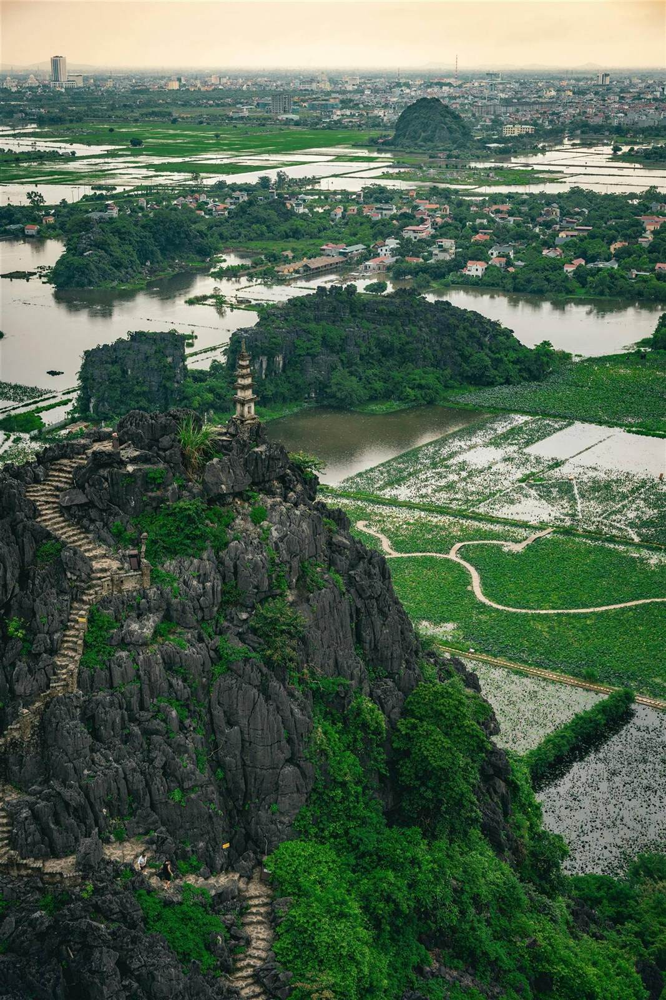
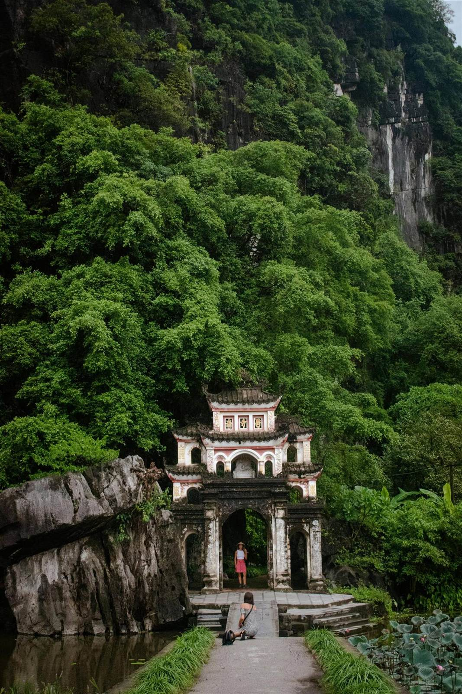
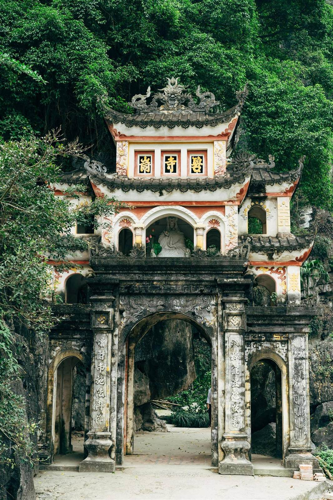
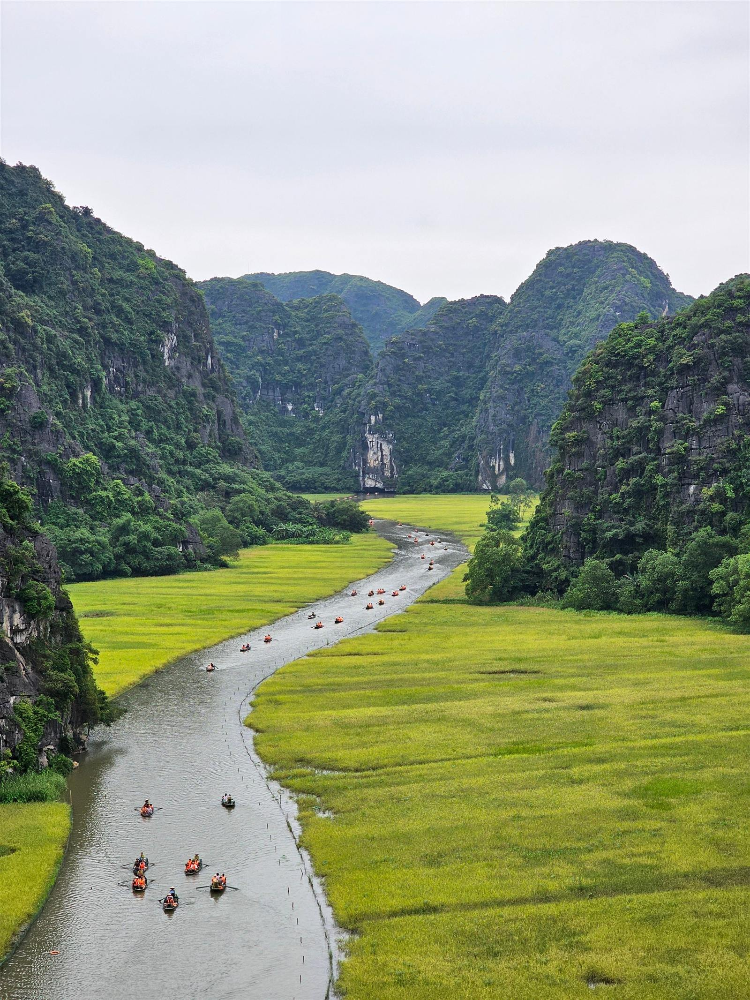

Ninh Binh
A picturesque province nicknamed Ha Long Bay on Land for its dramatic limestone karsts, lush rice paddies and winding rivers.
Overview
Ninh Binh is a picturesque province in the North of Vietnam, home to the UNESCO-recognized Trang An Landscape Complex. Nicknamed "Ha Long Bay on Land" for its dramatic limestone karsts, lush green rice paddies and winding rivers, the province offers a tranquil escape into nature just a short 2.5 hour bus journey from Hanoi. Immerse yourself in ancient history exploring Buddhist complexes nestled amongst the cliffs, quiet nature trails and iconic river boat tours through hidden caves and valleys. Ninh Binh, once the ancient capital of Vietnam, promises an enchanting journey into the country's natural beauty and cultural richness.
Highlights
- A boat ride through the Trang An Landscape Complex, a UNESCO site
- A boat ride in Tam Coc, famous for its feet-rowing boatmen
- The climb to Hang Mua viewpoint
- Bich Dong Pagoda
- Bai Dinh Pagoda
- The Hoa Lu Ancient Capital
- The Hoa Lu lotus fields
- Four Paws Ninh Binh bear sanctuary, supporting bears liberated from the illegal bile trade
Ancient Capital of Vietnam
Hoa Lu, nestled in the mountains of Ninh Binh, was Vietnam's ancient capital in the 10th century, serving as the political and cultural centre of the Đinh and Early Lê dynasties. It offers a fascinating look at the country's early independence and royal heritage. As Vietnam's first centralized feudal capital, it was chosen for its naturally defensive landscape of towering limestone mountains and rivers, serving as the capital of the ancient kingdom of Dai Co Viet for 42 years before the capital moved to Thăng Long (modern-day Hanoi) in 1010.
Travel Tips
- The best way to get there is by bus from Hanoi, a 2.5 hour journey
- Visit Hang Mua between late May and July to see the lotus fields in bloom
- Trek to Hang Mua viewpoint early morning or evening to avoid the midday heat, the steps are steep
- Rent a motorbike, Ninh Binh is flat and easy to navigate
- Take advantage of the free bicycles most homestays offer to explore the surrounding area
- Book in Tam Coc for a social area with shops and restaurants, or Trang An for a peaceful, secluded stay
Best Time to Visit
September to November offers ideal, comfortable weather. May to early June brings the iconic golden rice harvests and full lotus fields.
Plan Your TripNinh Binh in Pictures

Boat TourTrang An
KarstsTam Coc
ViewpointHang Mua
Rice FieldsRice Paddies